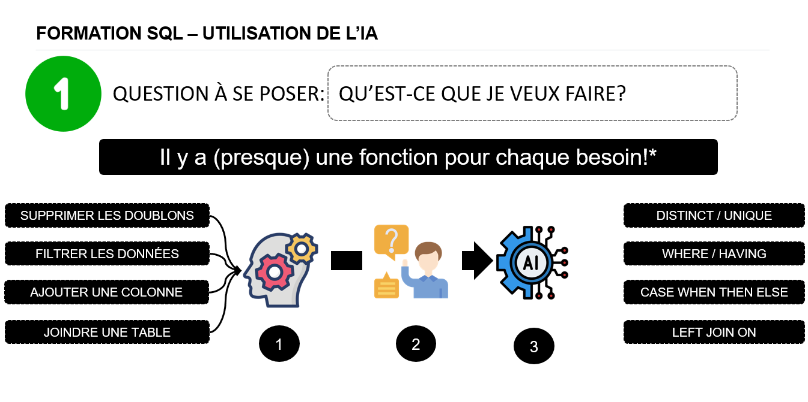

Formation SQL : réfléchir d’abord, solliciter l’IA ensuite
- On commence par s’interroger soi-même : « Qu’est-ce que je veux faire ? ». Supprimer des doublons, filtrer, ajouter une colonne, joindre une table.
- On cherche la solution par soi-même : il y a (presque) une fonction SQL pour chaque besoin, comme DISTINCT, WHERE, CASE WHEN ou LEFT JOIN.
- Si l’on n’y arrive pas, on pose alors la question à l’IA. Elle devient un coup de pouce, et l’apprenant garde la maîtrise de ce qu’il apprend.